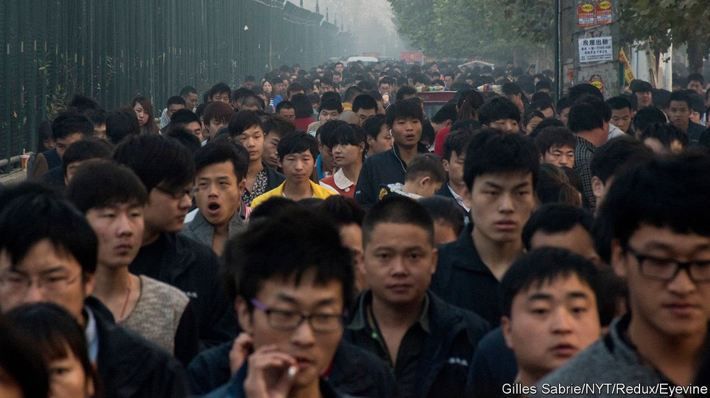
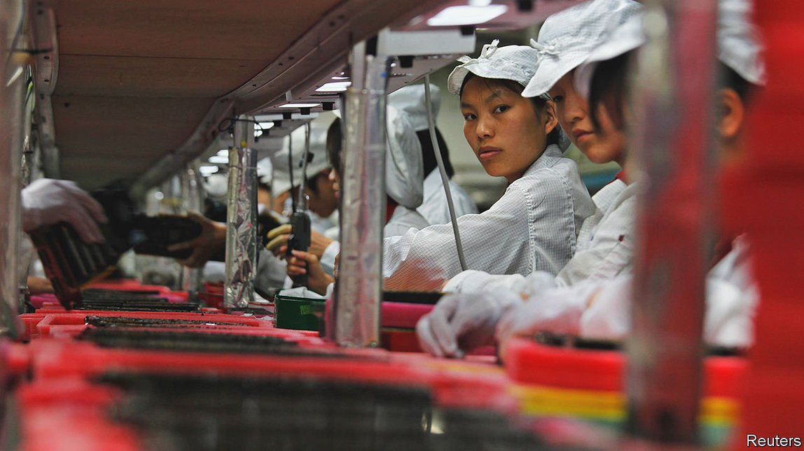

2021-09-03T05:35:49+00:00
产线诗人
中国工厂工人如何表达对生活的看法
诗歌、视频和时尚都在诉说外来务工者的难以融入

罗福兴会成为潮流引领者这件事让人难以置信。辍学后，他在广东南部的一个村庄里打鱼放羊。吃猪肉是每周才有一次的享受。14岁时，他离家到省内的血汗工厂打工。他讨厌这种工作的乏味。他读到美国罪犯的手肘上有蜘蛛网纹身，代表他们在狱中度过的时间。罗福兴也去纹了一个，因为“工厂只是一个更大的监狱。”
他辞了职，改去一家发廊工作。受到日本漫画和朋克时尚的启发，他染了发，做成夸张的、反重力的尖刺造型，再涂上深色唇膏和眼线。他把自拍照发到即时通讯服务QQ上——很快，他的风格被成千上万的工厂镇青年效仿。罗福兴把这些追随者称为“杀马特”，源自于“smart”的音译。他说，这是“一种在工人中蓬勃发展的艺术形式”。这一风潮在大约十年前达到顶峰，帮助来自农村的务工一族建立连结。他们在公园、溜冰场和线上群组中见面，不仅分享服饰造型方面的心得，也相互吐槽倾诉背井离乡的生活——从低工资和恶劣的工作条件到闹离婚的父母。
近年来，中国已经形成了一种独特的工人阶级文化，杀马特时尚只是其中最扎眼的一个例子。在主流媒体的呈现中，流水线工人一般都是密集地排列，穿清一色单调的制服，却丝毫没有展示他们如何度过在工厂外的时光。对于这些迁移到新兴城镇和大城市的工人（过去40年中达三亿人），刻板印象是他们只是为了谋生。他们仍然常被称为“农民工”，认为他们是最终将返回农村老家的外来者。过去确实有许多人这么做。但是今天的工人阶级青年对回到农村没有兴趣；许多人从小就住在城市里。他们想扎根。尽管在大众文化中处于边缘地位，但工人们正在以诗歌和在线分享的短视频等多种形式表达自己。
政府倾向于将农民工描绘成爱国和自我牺牲的人。位于广东省省会广州的一座专门为他们设立的博物馆赞扬了他们对中国经济崛起做出的贡献。展品颂扬共产党为改善工人生活所做的努力，也赞美工人的勤奋。入口处的牌子上写道：“广东，让农民工造就了一个又一个骄人的辉煌和传奇！”工厂工作的艰辛被淡化，工资被拖欠等常见的不公现象也未曾提及。
在其他地方，工人常被视为乡巴佬。“全国农民工春节联欢晚会”除夕在农业新闻频道播出。几年前开始自行举办非官方晚会的工人被国家新闻媒体傲慢地描述为“唱点小歌、跳点小舞，激情满满”。
难怪在 2017 年一篇才气逼人的自传文章在网上的发表引起了全国轰动。它出自生活在北京的家政工人范雨素之手，她现在是2019年创刊的非官方工人阶级写作双月刊《新工人文学》的主编。其中一种颇受文化界赞赏的体裁被称为“打工诗歌”。这方面最著名的创作者是许立志，他曾在富士康（生产苹果大部分 iPhone 手机的台湾公司）的装配线上工作。在他2014年自杀之前，24岁的他写了近 200 首关于辛苦单调的工厂工作的诗。其中最著名的一首是《我咽下一枚铁做的月亮》：
我咽下一枚铁做的月亮 / 他们把它叫做螺丝 / 我咽下这工业的废水，失业的订单 / 那些低于机台的青春早早夭亡 / 我咽下奔波，咽下流离失所 / 咽下人行天桥，咽下长满水锈的生活 / 我再咽不下了 / 所有我曾经咽下的现在都从喉咙汹涌而出 / 在祖国的领土上铺成一首 / 耻辱的诗
许多工人的诗歌都提到思乡、疏离、受伤和无力。一些诗刻意唤起美感，与他们凄凉的环境形成鲜明对比。在《吊带裙》中，14岁就受雇于一家纺织厂、少见的女工诗人邬霞写下了她对买得起她缝制的衣服的“陌生姑娘”的爱。由此，她也揭示了有关社会流动性的承诺难以达成，而这种承诺促使如此多的人走上流水线：邬霞现年40岁，已有诗作出版，却仍在一家服装厂工作。
包装车间灯火通明 / 我手握电熨斗 / 集聚我所有的手温 / 我要先把吊带熨平 / 挂在你肩上不会勒疼你 / 然后从腰身开始熨起 / 多么可爱的腰身 / 可以安放一只白净的手 / 林荫道上 / 轻抚一种安静的爱情……
一些文学是反抗性的，比如揭示政府政策使得农村出生的工厂工人极难利用城里的学校和医院。在《谁能禁止我爱》中，邬霞写到收留她的城市深圳：“这爱渗入到毛孔里、皮肤里、细胞里、血液里、骨头里/虽然这座城市的户口簿上没有我的名字。”一家私营矿山的工人陈年喜谈到，在国营企业工作的矿工们干得更少挣得更多，而他必须“把岩层一次次炸裂/借此 把一生重新组合”。（这些诗和其他诗的英文译本于 2016 年发表在工人诗集《铁做的月亮》［Iron Moon］中。）
政府容忍这种写作，部分原因是像《新工人文学》这样的期刊发行受限，不能在书店销售。莱顿大学的马吉尔·范克雷维尔（Maghiel van Crevel）指出，许多诗人在网上发表作品，而为避免审查，他们会注意不对被称作“黑工厂”的地下作坊内的“恐怖景象做未经过滤的呈现”。有些诗是自豪或爱国的；许多写作者的动机是为了赢得尊重。在广州博物馆的游客手册中，一位来访的农民工写道：“农民工，劳动者，我们是最优秀的人。”
不过，研究工人诗歌的范克雷维尔说，工人的写作在根本上无关政治抵抗。今天很少有蓝领青年认为他们属于一个有凝聚力的工人阶级。部分原因是官员和官方媒体避免使用“阶级”这个词，因为它带有对立的意味。（他们更愿意使用“社会阶层”。）许多年轻工人自称“打工人”，这个词有工作临时和地位低的意味。其最极端的表现是深圳的一种亚文化，其成员自称“三和大神”。这些年轻的农民工在城市的三和就业市场上转悠，寻找日结工作，通常是建筑工人或送货司机。他们拒绝工厂的繁重劳动；他们的口号是：“干一天，玩三天”。有些人甚至出售自己的身份证。
成为“杀马特”也是对单调的工厂生活的一种反抗。在 2019 年上映的中国纪录片《杀马特我爱你》中，70 位曾经和现在的“杀马特”分享了他们对身为“杀马特”意味着什么的看法。他们奔放的发型引起了人们的注意。“虽然说别人不是那种从心里面这种关注，是异类的那种关注，就看得到你，你只要能看得到。”一位受访者说。许多人认为他们是特殊团体的一员，剪头发意味着回到“只会默默无闻地在一条流水线里面工作”。对于一些人来说，朋克身份变得比在大厂挣高工资更重要，因为在那里他们会被迫剪掉头发。无论男女，在一个许多人被欺骗、让人迷失的新城市中，这是一种让自己看起来更加坚强的方式：“感觉外面这么乱，我们几个人太朴素了，怕被人欺负。”头发、纹身和小团体心态都有帮助。
随着这种潮流的传播，它的追随者开始受到古板的中产阶级网民的嘲笑。2010 年左右，网上针对“杀马特”的持续攻击导致数千人剪掉头发并退出这个群体。警察开始围堵任何有这种明显风格的人，查他们的证件；没有暂住证的人会被拘留。
在广东的部分地区仍然有很多“杀马特”的粉丝。但这种潮流已经不那么时髦了，因为工厂青年找到了一种新的表达方式：视频共享应用。货车司机、建筑工人和农民都有了粉丝，有的甚至成了红人——不是“尽管是”蓝领，而恰恰是“因为是”蓝领。在制造业重镇，工厂内部经常禁止使用手机，装配线工人就在厂外记录他们的生活。广泛使用的主题标签包括“#工厂生活”和“#提桶”。后一个指的是（常具有讽刺意味）辞掉一份工作去寻找更好的工作，而除了一桶身家之外一无所有。
通过视频，工人们互相加油打气。他们交换信息，比如哪个工厂工资更高，老板为人更公平些。香港非政府组织中国劳工通讯的艾丹·周（Aidan Chau）说，这在“没有工会告诉他们工作福利的不利环境中”尤其有用。有些人谈到工伤或性骚扰。其他人则模仿城市中产阶级青年的时尚生活。“他们希望住在城市并成为城市公民的愿望越来越强烈，尽管他们意识到这很难——甚至不可能成真。”周先生说。
无论是通过诗歌还是视频共享应用来表达，幻灭感似乎都在增长。罗福兴说，曾经人们以做工人为荣。“现在都不好意思说自己是工人。”在工厂工作的年轻人将短视频视为一种挣脱：既是为了消磨时间，也是为了超越身处的新兴城镇融入更广阔的世界。然而，即使在网上，他们也很难获得认可。张玉蓉（音译）是少数通过记录在富士康的工人生活而收获大批粉丝的人之一。她的视频中有一些评论说工厂工人是“被社会抛弃的人”。她说这激怒了她，不是因为这句话错了，而是因为它是对的。
许立志的一位朋友，另一位打工诗人在他去世后写道：“又一枚螺丝松动/又一位打工兄弟坠楼/你替我死去/我替你继续写诗。”
2021-09-03T05:35:49+00:00
Production-line poets
How Chinese factory-workers express their views on life
Poems, videos and fashion all speak to migrants’ alienation
AS TRENDSETTERS GO, Luo Fuxing was an implausible one. A school drop-out, Mr Luo spent his days catching fish and herding goats in a village in southern Guangdong province. Eating pork was a once-weekly treat. At the age of 14, he left home to earn a wage in the province’s sweatshops. He hated the tedium of the work. He read that American criminals had tattoos of spiders’ webs inked onto their elbows to show time spent behind bars. Mr Luo got one too, because “the factory was just a bigger prison.”
He quit for a job in a hair salon. Inspired by Japanese manga and punk fashion, he dyed his hair and styled it into dramatic, gravity-defying spikes. Dark lipstick and eyeliner completed the look. He posted selfies to QQ, a messaging service—and soon hundreds of thousands of factory-town youth were copying his style. Mr Luo called its adopters the shamate, from a Chinese rendering of “smart”. It was “a wild-growing art form among workers”, he says. The trend, which peaked around a decade ago, helped newly arrived migrants from the countryside to bond. They met in parks, roller-skating rinks and online groups, where they shared not just sartorial cues but gripes about migrant life, from low pay and poor conditions to divorcing parents.
China has developed a distinct working-class culture in recent years, of which shamate fashion is only the most garish example. In mainstream media assembly-line workers are commonly shown in serried ranks and drab uniforms, with no hint as to how they spend their time outside factory walls. The stereotype is that workers who migrate to boomtowns and big cities—as 300m have done over the past four decades—are there only to earn a living. They are still commonly referred to as “migrant workers”, on the assumption that they are outsiders who will return to their rural hometowns. Many once did. But today’s working-class youth have no interest in going back to the land; many have lived in the city from a young age. They want to put down roots. Although marginalised in mass culture, workers are expressing themselves, in forms as varied as poetry and short videos shared online.
The government tends to portray migrant workers as patriotic and self-sacrificing. A museum dedicated to them in Guangzhou, the capital of Guangdong, lauds their contribution to China’s economic ascent. Exhibits extol the Communist Party’s efforts to improve workers’ livelihoods and applaud their diligence. A sign at the entry reads: “Guangdong lets migrant workers create proud glories and legends again and again!” The hardship of factory work is glossed over, as are common injustices such as withheld wages.
Elsewhere, workers are often treated as country bumpkins. A “migrant-workers” version of the annual Spring Festival Gala, a big television show broadcast on the eve of the lunar new year, airs on a channel about agricultural news. Workers who began to stage their own unofficial gala some years ago were condescendingly described by state news outlets as offering “a little song, a little dance and a lot of passion”.
Small wonder that a coruscating memoir by Fan Yusu, a domestic worker living in Beijing, was a national sensation when it was published online in 2017. Ms Fan is now the editor-in-chief of New Workers’ Literature, an unofficial bimonthly journal of working-class writing, launched in 2019. One genre winning admiration from the literati is called dagong shige or “labour poetry”. Its most famous practitioner was Xu Lizhi, who worked on an assembly line for Foxconn, a Taiwanese firm that makes most of Apple’s iPhones. Before he committed suicide in 2014, at the age of 24, he had written almost 200 poems about the drudgery of factory work. Among the best known is “I Swallowed An Iron Moon”:
Many workers’ poems refer to homesickness, alienation, injuries and powerlessness. A few deliberately evoke beauty, in jarring contrast to their bleak surroundings. In “Sundress”, Wu Xia—a rare female worker-poet, hired by a textile factory at the age of 14—writes of her love for the “unknown girl” with the means to buy the garment she sews. She also thus lays bare the elusive promise of social mobility that drives so many to the assembly line: Ms Wu, now 40 and a published poet, still works at a clothing factory.
Some literature is defiant, including towards government policies that make it extremely hard for factory-workers born in rural areas to make use of schools and hospitals in the cities. In “Who Can Forbid My Love”, Ms Wu writes of her adoptive city of Shenzhen: “This kind of love seeps into the pores, skin, cells, blood, bone / Even though there’s no residence permit with my name on it.” Chen Nianxi, a worker in a private mine, speaks of fellow miners who, employed by state-run firms, toil less yet earn more while he must blast “the rocks layer by layer / to put my life back together”. (English translations of these and other poems were published in 2016 in “Iron Moon”, an anthology of labour poetry.)
Such writing is tolerated by the government partly because journals like New Workers’ Literature are written for limited circulation and may not be sold in bookshops. Many poets publish online where, to avoid censorship, they steer clear of “unfiltered representations of the horrors” inside unregistered workshops known as “black factories”, notes Maghiel van Crevel of Leiden University. Some poems are proud or patriotic; many of those who write are motivated by a desire to earn respect. In the visitors’ book at the museum in Guangzhou, a visiting labourer has written: “Migrant workers, working souls, we’re the finest of them all.”
Yet workers’ writing is not fundamentally about political resistance, says Mr van Crevel, who studies labour poetry. Few blue-collar youths today feel they belong to a cohesive working class. That is partly because officials and state media avoid using the word “class”, or jieji, owing to its antagonistic overtones. (“Social stratum”, or jieceng, is preferred.) Many young workers call themselves dagong ren, a word for labourer that connotes temporary and low-status work. Its most extreme display is a subculture in Shenzhen whose members style themselves “Sanhe gods”. These young migrant workers hang around the city’s Sanhe job market to find day work, often as builders or delivery drivers. They reject the grind of the factory; their slogan is: “Work for a day, party for three.” Some even sell their national-identity cards.
Becoming a shamate was also a form of rebellion against the monotony of factory life. In a Chinese documentary released in 2019, “We Were Smart”, 70 former and current shamate shared their views on what it meant to be one. Their exuberant hairstyles turned heads. “People paid attention. It wasn’t positive attention. But they saw you. And the point was to be seen,” says one interviewee. Many felt they were part of a select group, and that cutting their hair would have meant going back to being “just another unknown line worker”. For some, the punk identity became more important than earning a better wage at a big factory, where they would have been forced to cut their hair. For men and women alike, it was a way of seeming tougher in a disorienting new city where many were cheated: “We felt we weren’t safe out there. That we were too honest, and were afraid of being messed with.” The hair, tattoos and clan mentality all helped.
As the fashion spread, its adherents began to be ridiculed by prim, middle-class netizens. A sustained online attack against shamate around 2010 led thousands to lop off their hair and drop out of the group. Police began to round up anyone with the telltale style, to check their papers; anyone without a temporary residence permit would be detained.
Shamate fans still congregate in parts of Guangdong. But the fashion has lost its edge as factory youth have found a new way to express themselves: video-sharing apps. Lorry drivers, construction workers and farmers have built followings and sometimes found stardom—not despite being blue-collar workers, but because of it. In manufacturing hubs, where phones are often banned inside factories, assembly-line workers document their lives outside them. Widely used hashtags include #FactoryLife and #LiftTheBucket. The last refers, often ironically, to quitting a job in search of a better one, with nothing but a bucket of belongings.
Through the videos, workers cheer each other on. They trade information: which factory has higher wages or fairer bosses, say. That is especially useful in a “hostile environment where there is no trade union to tell them about working benefits”, says Aidan Chau of China Labour Bulletin, an NGO in Hong Kong. Some speak of injuries or sexual harassment. Others parody the trendy life of urban middle-class youth. “Their aspiration to live in a city and become an urban citizen grows, even as they realise it is implausible—even impossible,” says Mr Chau.
Whether expressed in poems or through video-sharing apps, a sense of disillusionment seems to be growing. There was once pride in being a worker, says Mr Luo. “Now it’s embarrassing to say you’re one.” Young people working in factories see short videos as an escape: a way to kill time, but also to be part of a wider world beyond their gritty boomtowns. Yet even online, they struggle to gain acceptance. Zhang Yurong is among a handful who have built a wide following by recording life as a worker at Foxconn. Some comments on her videos say factory workers are “people abandoned by society”. That angered her, she says, not because it was wrong but because it was right.
A fellow worker-poet and friend of Xu wrote in tribute after his death: “Another screw comes loose / Another migrant-worker brother jumps / You die in place of me / And I keep writing in place of you.” ■
2021-09-03T05:35:49+00:00
產線詩人
中國工廠工人如何表達對生活的看法
詩歌、視頻和時尚都在訴說外來務工者的難以融入
羅福興會成為潮流引領者這件事讓人難以置信。輟學後，他在廣東南部的一個村莊里打魚放羊。吃豬肉是每周才有一次的享受。14歲時，他離家到省內的血汗工廠打工。他討厭這種工作的乏味。他讀到美國罪犯的手肘上有蜘蛛網紋身，代表他們在獄中度過的時間。羅福興也去紋了一個，因為“工廠只是一個更大的監獄。”
他辭了職，改去一家髮廊工作。受到日本漫畫和朋克時尚的啟發，他染了發，做成誇張的、反重力的尖刺造型，再塗上深色唇膏和眼線。他把自拍照發到即時通訊服務QQ上——很快，他的風格被成千上萬的工廠鎮青年效仿。羅福興把這些追隨者稱為“殺馬特”，源自於“smart”的音譯。他說，這是“一種在工人中蓬勃發展的藝術形式”。這一風潮在大約十年前達到頂峰，幫助來自農村的務工一族建立連結。他們在公園、溜冰場和線上群組中見面，不僅分享服飾造型方面的心得，也相互吐槽傾訴背井離鄉的生活——從低工資和惡劣的工作條件到鬧離婚的父母。
近年來，中國已經形成了一種獨特的工人階級文化，殺馬特時尚只是其中最扎眼的一個例子。在主流媒體的呈現中，流水線工人一般都是密集地排列，穿清一色單調的制服，卻絲毫沒有展示他們如何度過在工廠外的時光。對於這些遷移到新興城鎮和大城市的工人（過去40年中達三億人），刻板印象是他們只是為了謀生。他們仍然常被稱為“農民工”，認為他們是最終將返回農村老家的外來者。過去確實有許多人這麼做。但是今天的工人階級青年對回到農村沒有興趣；許多人從小就住在城市裡。他們想紮根。儘管在大眾文化中處於邊緣地位，但工人們正在以詩歌和在線分享的短視頻等多種形式表達自己。
政府傾向於將農民工描繪成愛國和自我犧牲的人。位於廣東省省會廣州的一座專門為他們設立的博物館讚揚了他們對中國經濟崛起做出的貢獻。展品頌揚共產黨為改善工人生活所做的努力，也讚美工人的勤奮。入口處的牌子上寫道：“廣東，讓農民工造就了一個又一個驕人的輝煌和傳奇！”工廠工作的艱辛被淡化，工資被拖欠等常見的不公現象也未曾提及。
在其他地方，工人常被視為鄉巴佬。“全國農民工春節聯歡晚會”除夕在農業新聞頻道播出。幾年前開始自行舉辦非官方晚會的工人被國家新聞媒體傲慢地描述為“唱點小歌、跳點小舞，激情滿滿”。
難怪在 2017 年一篇才氣逼人的自傳文章在網上的發表引起了全國轟動。它出自生活在北京的家政工人范雨素之手，她現在是2019年創刊的非官方工人階級寫作雙月刊《新工人文學》的主編。其中一種頗受文化界讚賞的體裁被稱為“打工詩歌”。這方面最著名的創作者是許立志，他曾在富士康（生產蘋果大部分 iPhone 手機的台灣公司）的裝配線上工作。在他2014年自殺之前，24歲的他寫了近 200 首關於辛苦單調的工廠工作的詩。其中最著名的一首是《我咽下一枚鐵做的月亮》：
我咽下一枚鐵做的月亮 / 他們把它叫做螺絲 / 我咽下這工業的廢水，失業的訂單 / 那些低於機台的青春早早夭亡 / 我咽下奔波，咽下流離失所 / 咽下人行天橋，咽下長滿水銹的生活 / 我再咽不下了 / 所有我曾經咽下的現在都從喉嚨洶湧而出 / 在祖國的領土上鋪成一首 / 恥辱的詩
許多工人的詩歌都提到思鄉、疏離、受傷和無力。一些詩刻意喚起美感，與他們凄涼的環境形成鮮明對比。在《弔帶裙》中，14歲就受雇於一家紡織廠、少見的女工詩人鄔霞寫下了她對買得起她縫製的衣服的“陌生姑娘”的愛。由此，她也揭示了有關社會流動性的承諾難以達成，而這種承諾促使如此多的人走上流水線：鄔霞現年40歲，已有詩作出版，卻仍在一家服裝廠工作。
包裝車間燈火通明 / 我手握電熨斗 / 集聚我所有的手溫 / 我要先把弔帶熨平 / 掛在你肩上不會勒疼你 / 然後從腰身開始熨起 / 多麼可愛的腰身 / 可以安放一隻白凈的手 / 林蔭道上 / 輕撫一種安靜的愛情……
一些文學是反抗性的，比如揭示政府政策使得農村出生的工廠工人極難利用城裡的學校和醫院。在《誰能禁止我愛》中，鄔霞寫到收留她的城市深圳：“這愛滲入到毛孔里、皮膚里、細胞里、血液里、骨頭裡/雖然這座城市的戶口簿上沒有我的名字。”一家私營礦山的工人陳年喜談到，在國營企業工作的礦工們幹得更少掙得更多，而他必須“把岩層一次次炸裂/藉此 把一生重新組合”。（這些詩和其他詩的英文譯本於 2016 年發表在工人詩集《鐵做的月亮》［Iron Moon］中。）
政府容忍這種寫作，部分原因是像《新工人文學》這樣的期刊發行受限，不能在書店銷售。萊頓大學的馬吉爾·范克雷維爾（Maghiel van Crevel）指出，許多詩人在網上發表作品，而為避免審查，他們會注意不對被稱作“黑工廠”的地下作坊內的“恐怖景象做未經過濾的呈現”。有些詩是自豪或愛國的；許多寫作者的動機是為了贏得尊重。在廣州博物館的遊客手冊中，一位來訪的農民工寫道：“農民工，勞動者，我們是最優秀的人。”
不過，研究工人詩歌的范克雷維爾說，工人的寫作在根本上無關政治抵抗。今天很少有藍領青年認為他們屬於一個有凝聚力的工人階級。部分原因是官員和官方媒體避免使用“階級”這個詞，因為它帶有對立的意味。（他們更願意使用“社會階層”。）許多年輕工人自稱“打工人”，這個詞有工作臨時和地位低的意味。其最極端的表現是深圳的一種亞文化，其成員自稱“三和大神”。這些年輕的農民工在城市的三和就業市場上轉悠，尋找日結工作，通常是建築工人或送貨司機。他們拒絕工廠的繁重勞動；他們的口號是：“干一天，玩三天”。有些人甚至出售自己的身份證。
成為“殺馬特”也是對單調的工廠生活的一種反抗。在 2019 年上映的中國紀錄片《殺馬特我愛你》中，70 位曾經和現在的“殺馬特”分享了他們對身為“殺馬特”意味着什麼的看法。他們奔放的髮型引起了人們的注意。“雖然說別人不是那種從心裏面這種關注，是異類的那種關注，就看得到你，你只要能看得到。”一位受訪者說。許多人認為他們是特殊團體的一員，剪頭髮意味着回到“只會默默無聞地在一條流水線裡面工作”。對於一些人來說，朋克身份變得比在大廠掙高工資更重要，因為在那裡他們會被迫剪掉頭髮。無論男女，在一個許多人被欺騙、讓人迷失的新城市中，這是一種讓自己看起來更加堅強的方式：“感覺外面這麼亂，我們幾個人太樸素了，怕被人欺負。”頭髮、紋身和小團體心態都有幫助。
隨着這種潮流的傳播，它的追隨者開始受到古板的中產階級網民的嘲笑。2010 年左右，網上針對“殺馬特”的持續攻擊導致數千人剪掉頭髮並退出這個群體。警察開始圍堵任何有這種明顯風格的人，查他們的證件；沒有暫住證的人會被拘留。
在廣東的部分地區仍然有很多“殺馬特”的粉絲。但這種潮流已經不那麼時髦了，因為工廠青年找到了一種新的表達方式：視頻共享應用。貨車司機、建築工人和農民都有了粉絲，有的甚至成了紅人——不是“儘管是”藍領，而恰恰是“因為是”藍領。在製造業重鎮，工廠內部經常禁止使用手機，裝配線工人就在廠外記錄他們的生活。廣泛使用的主題標籤包括“#工廠生活”和“#提桶”。後一個指的是（常具有諷刺意味）辭掉一份工作去尋找更好的工作，而除了一桶身家之外一無所有。
通過視頻，工人們互相加油打氣。他們交換信息，比如哪個工廠工資更高，老闆為人更公平些。香港非政府組織中國勞工通訊的艾丹·周（Aidan Chau）說，這在“沒有工會告訴他們工作福利的不利環境中”尤其有用。有些人談到工傷或性騷擾。其他人則模仿城市中產階級青年的時尚生活。“他們希望住在城市並成為城市公民的願望越來越強烈，儘管他們意識到這很難——甚至不可能成真。”周先生說。
無論是通過詩歌還是視頻共享應用來表達，幻滅感似乎都在增長。羅福興說，曾經人們以做工人為榮。“現在都不好意思說自己是工人。”在工廠工作的年輕人將短視頻視為一種掙脫：既是為了消磨時間，也是為了超越身處的新興城鎮融入更廣闊的世界。然而，即使在網上，他們也很難獲得認可。張玉蓉（音譯）是少數通過記錄在富士康的工人生活而收穫大批粉絲的人之一。她的視頻中有一些評論說工廠工人是“被社會拋棄的人”。她說這激怒了她，不是因為這句話錯了，而是因為它是對的。
許立志的一位朋友，另一位打工詩人在他去世後寫道：“又一枚螺絲鬆動/又一位打工兄弟墜樓/你替我死去/我替你繼續寫詩。”